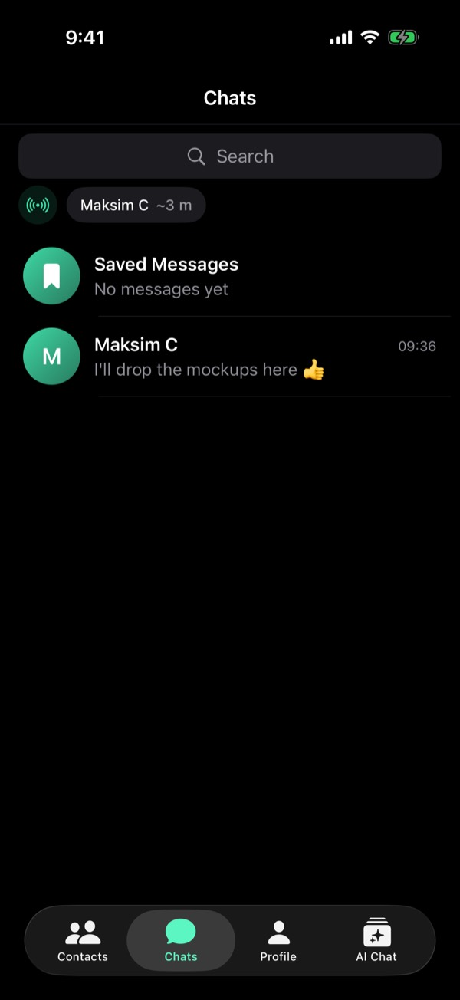

Saved Messages
Your chat with yourself, and where it lives
A chat with yourself
Saved Messages is always at the top of Chats, with a bookmark. Write yourself a note or a link, or drop in a file to keep.

Forward into it
Hold a message and tap Forward: Saved Messages is first in the list. Share → Viper in another app lists it first too.
Through the relay, to you
Even a note to yourself goes via the relay, encrypted to your own key. The relay hands it back and deletes it. A file there: up to 50 MB free, 2 GB with Viper Pro.
It stays
Saved Messages cannot be deleted as a chat, in Chats or in Storage. Hold one message and tap Delete for me. To take it to a new phone: Encrypted Chat Backup.
From the guide in Viper 1.5.34: Profile → Settings → Help → Guides. All posts